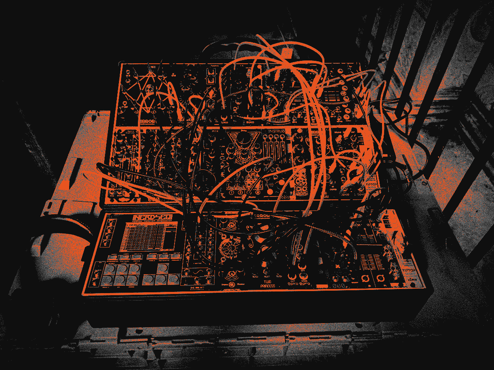

ARTICLES
Here you’ll find additional content not found in the zines. If you’ve got any thoughts about anything or would like to contribute, drop me an email or post in the BPO Fb group.
30/06/24 Making Scales for Disting NEW30/06/24 Behind the Zine: Issue VII NEW
01/01/23 2022 - My Year In Review
04/10/22 Module Review: AFA - Baron Samedi
29/08/22 Module Review: Qu-Bit - Aurora
29/08/22 Behind the Zine: Issue VI
14/08/22 Tutorial: Paper Panel Overlays
10/07/22 Interview: Yawning Youth
10/07/22 Interview: Cessative State
29/06/22 Interview: Twenty9Cult
29/06/22 Interview: SynthRacks
24/05/22 How I Sequence My Live Case
24/05/22 Black Panels - Where Do I Get Them?
24/05/22 Tutorial: Painting Panels
24/05/22 Secret Messages & PCB Art
24/05/22 Black Hardware Review
24/05/22 Behind the Zine: Issue I
24/05/22 Behind the Zine: Issue II
24/05/22 Behind the Zine: Issue III
24/05/22 Behind the Zine: Issue IV
24/05/22 Behind the Zine: Issue V
